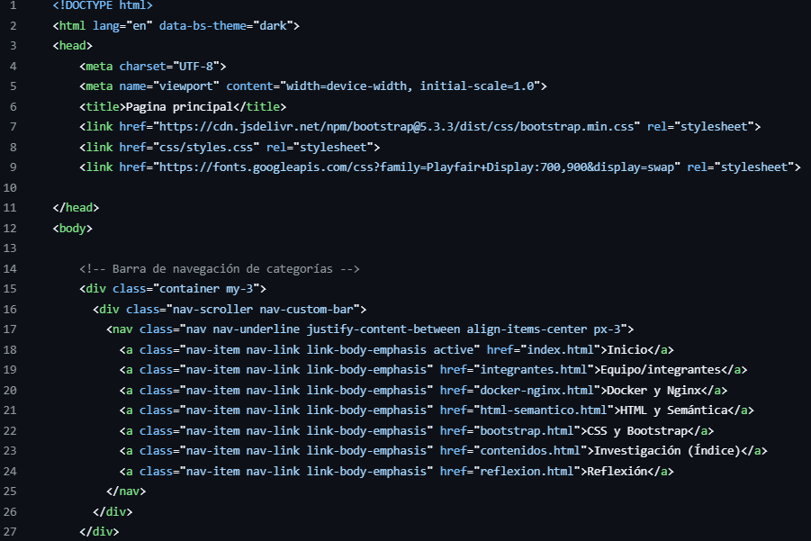
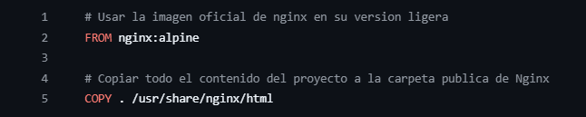
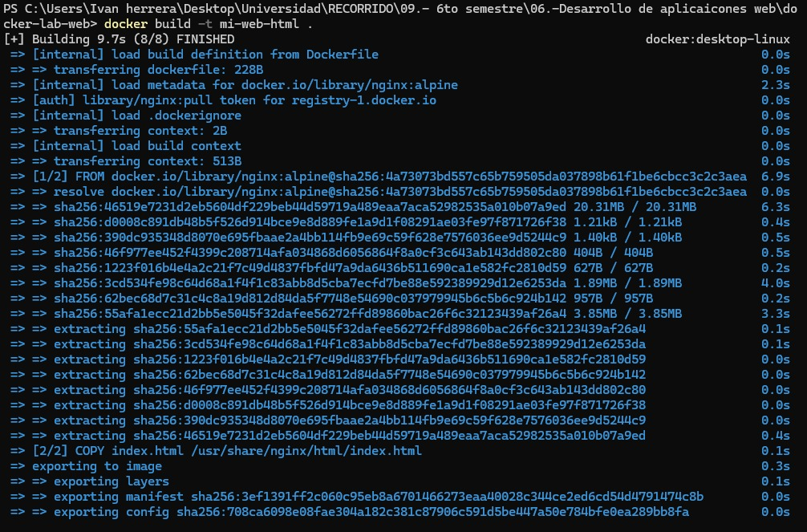
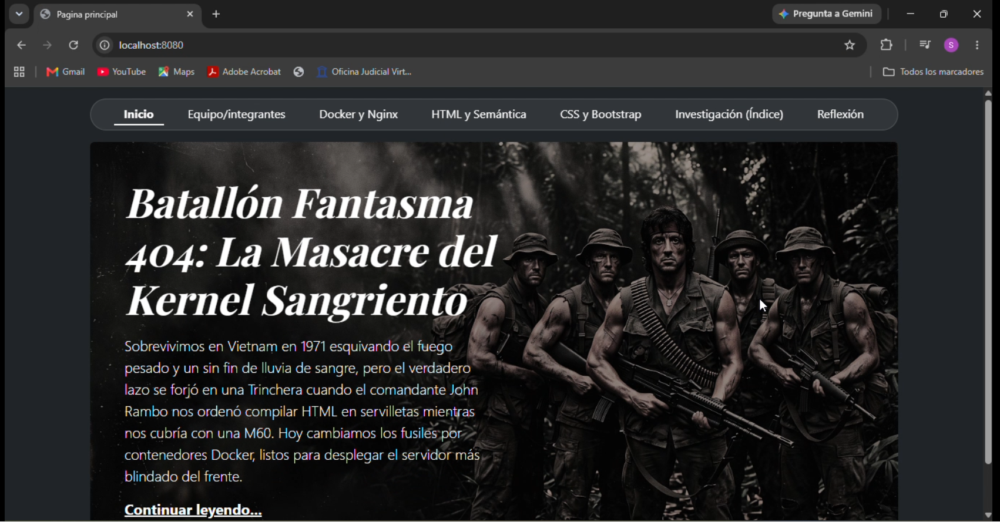

Paso a paso para crear y desplegar
-
Crear la carpeta de trabajo
Crea el directorio de trabajo donde residirán tus archivos de configuración, por ejemplo:
C:\docker-lab-web[cite: 9]. -
Crear el archivo index.html
Dentro de la carpeta, crea el archivo HTML base que servirá el contenedor[cite: 9].

-
Crear el archivo Dockerfile
En la misma raíz del directorio, crea un archivo nombrado exactamente como
Dockerfile(sin extensión) con la configuración para Nginx[cite: 9].
-
Construir la imagen personalizada
Abre una terminal (PowerShell o CMD), navega a la carpeta del proyecto y ejecuta[cite: 9]:
docker build -t mi-web-html .Esto descargará la imagen base
nginx:alpine(si no existe localmente) y generará tu imagen personalizada[cite: 9].
-
Ejecutar el contenedor
Publica el puerto 80 del contenedor en el puerto 8080 de tu máquina anfitriona[cite: 9]:
docker run -d -p 8080:80 --name mi-web-container mi-web-htmlAbre tu navegador e ingresa a http://localhost:8080 para comprobar que la página está activa desde Docker[cite: 9].
